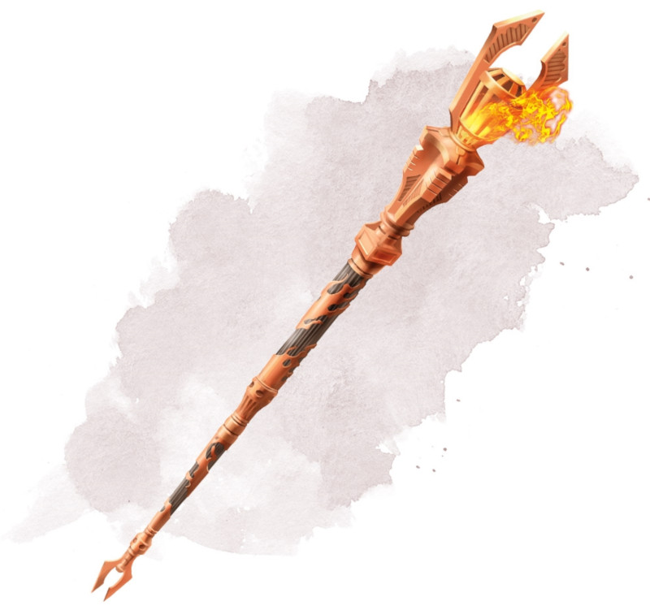

Bâton de feu
[ Staff of Fire ]
Bâton, très rare (nécessite un lien avec un druide, un ensorceleur, un magicien ou un occultiste)
Vous obtenez la résistance aux dégâts de feu tant que vous tenez ce bâton.
Le bâton possède 10 charges. Tant que vous le tenez, vous pouvez utiliser une action pour en dépenser 1 ou plusieurs charges afin de lancer l'un des sorts suivants tout en utilisant votre propre DD des sorts : mains brûlantes (1 de charge), boule de feu (3 charges) ou mur de feu (4 charges).
Le bâton récupère 1d6 + 4 charges dépensées chaque jour à l'aube. Si vous dépensez la dernière charge, lancez un d20. Sur un résultat de 1, le bâton noircit, tombe en cendre et est détruit.
Le bâton possède 10 charges. Tant que vous le tenez, vous pouvez utiliser une action pour en dépenser 1 ou plusieurs charges afin de lancer l'un des sorts suivants tout en utilisant votre propre DD des sorts : mains brûlantes (1 de charge), boule de feu (3 charges) ou mur de feu (4 charges).
Le bâton récupère 1d6 + 4 charges dépensées chaque jour à l'aube. Si vous dépensez la dernière charge, lancez un d20. Sur un résultat de 1, le bâton noircit, tombe en cendre et est détruit.
Dungeon Master´s Guide (SRD)
